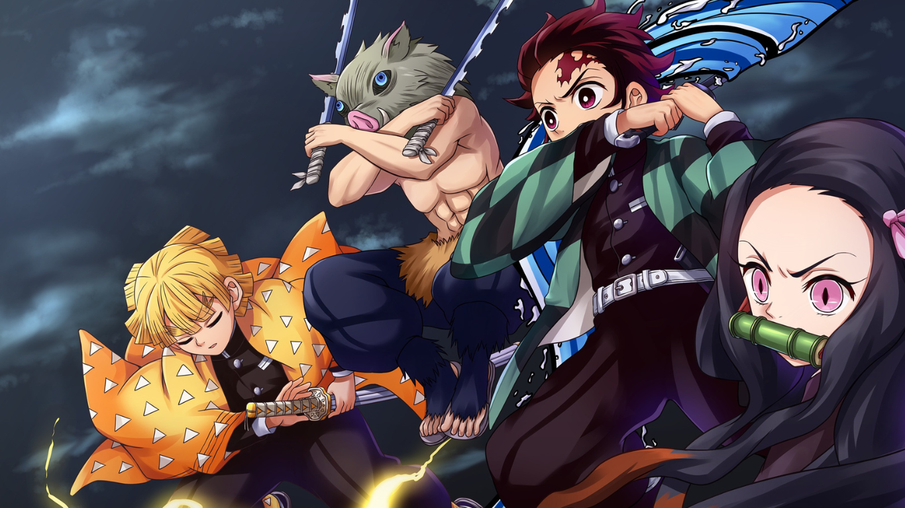

DEMON SLAYER: KIMETSU NO YAIBA
9 / 10
During the Taisho Period in Japan, Tanjiro, a benevolent charcoal vendor, experiences the loss of his family to a demon attack. Adding to the tragedy, his sister Nezuko, who is the lone survivor, has also turned into a demon. Despite the overwhelming sorrow, Tanjiro is determined to restore his sister back to her human form and seek revenge against the demon responsible by becoming a "demon slayer."
Studio : Ufotable
Type : TV Series
Release date : April 6, 2019